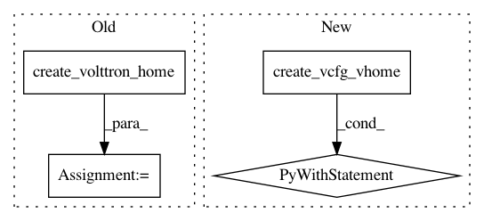

2fc586c0d9089876fe40e66bef6d98e03d4c8155,volttrontesting/platform/test_instance_setup.py,,test_zmq_case_with_agents,#,95
Before Change
def test_zmq_case_with_agents(monkeypatch):
vhome = create_volttron_home()
monkeypatch.setenv("VOLTTRON_HOME", vhome)
config_path = os.path.join(vhome, "config")
message_bus = "zmq"
After Change
def test_zmq_case_with_agents(monkeypatch):
with create_vcfg_vhome() as vhome:
monkeypatch.setenv("VOLTTRON_HOME", vhome)
config_path = os.path.join(vhome, "config")
message_bus = "zmq"
vip_address = "tcp://127.0.0.15"
vip_port = "22916"
is_web_enabled = "N"
is_vcp = "Y"
instance_name = "test_zmq"
vc_hostname = "{}{}".format("https://", get_hostname())
vc_port = "8443"
install_historian = "Y"
install_driver = "Y"
install_fake_device = "Y"
install_listener = "Y"
agent_autostart = "N"
vcfg_args = "\n".join([message_bus,
vip_address,
vip_port,
is_web_enabled,
is_vcp,
instance_name,
vc_hostname,
vc_port,
agent_autostart,
install_historian,
agent_autostart,
install_driver,
install_fake_device,
agent_autostart,
install_listener,
agent_autostart
])
with subprocess.Popen(["vcfg", "--vhome", vhome],
env=os.environ,
stdin=subprocess.PIPE,
stdout=subprocess.PIPE,
stderr=subprocess.PIPE,
text=True
) as vcfg:
out, err = vcfg.communicate(vcfg_args)
// print("CWD is: {}".format(os.getcwd()))
print("OUT is: {}".format(out))
print("ERROR is: {}".format(err))
assert os.path.exists(config_path)
config = ConfigParser()
config.read(config_path)
assert config.get("volttron", "message-bus") == "zmq"
assert config.get("volttron", "vip-address") == "tcp://127.0.0.15:22916"
assert config.get("volttron", "instance-name") == "test_zmq"
assert _is_agent_installed("listener")
assert _is_agent_installed("master_driver")
assert _is_agent_installed("platform_historian")
assert _is_agent_installed("vcp")
assert not _is_agent_installed("vc ")
assert not is_volttron_running(vhome)
def test_zmq_case_web_no_agents(monkeypatch):
with create_vcfg_vhome() as vhome:
monkeypatch.setenv("VOLTTRON_HOME", vhome)
config_path = os.path.join(vhome, "config")
In pattern: SUPERPATTERN
Frequency: 6
Non-data size: 4
Instances
Project Name: VOLTTRON/volttron
Commit Name: 2fc586c0d9089876fe40e66bef6d98e03d4c8155
Time: 2020-06-19
Author: spencer.gilbride@pnnl.gov
File Name: volttrontesting/platform/test_instance_setup.py
Class Name:
Method Name: test_zmq_case_with_agents
Project Name: VOLTTRON/volttron
Commit Name: 2fc586c0d9089876fe40e66bef6d98e03d4c8155
Time: 2020-06-19
Author: spencer.gilbride@pnnl.gov
File Name: volttrontesting/platform/test_instance_setup.py
Class Name:
Method Name: test_zmq_case_web_vc_with_agents
Project Name: VOLTTRON/volttron
Commit Name: 2fc586c0d9089876fe40e66bef6d98e03d4c8155
Time: 2020-06-19
Author: spencer.gilbride@pnnl.gov
File Name: volttrontesting/platform/test_instance_setup.py
Class Name:
Method Name: test_zmq_case_web_with_agents
Project Name: VOLTTRON/volttron
Commit Name: 2fc586c0d9089876fe40e66bef6d98e03d4c8155
Time: 2020-06-19
Author: spencer.gilbride@pnnl.gov
File Name: volttrontesting/platform/test_instance_setup.py
Class Name:
Method Name: test_zmq_case_web_no_agents
Project Name: VOLTTRON/volttron
Commit Name: 2fc586c0d9089876fe40e66bef6d98e03d4c8155
Time: 2020-06-19
Author: spencer.gilbride@pnnl.gov
File Name: volttrontesting/platform/test_instance_setup.py
Class Name:
Method Name: test_zmq_case_web_vc
Project Name: VOLTTRON/volttron
Commit Name: 2fc586c0d9089876fe40e66bef6d98e03d4c8155
Time: 2020-06-19
Author: spencer.gilbride@pnnl.gov
File Name: volttrontesting/platform/test_instance_setup.py
Class Name:
Method Name: test_zmq_case_no_agents